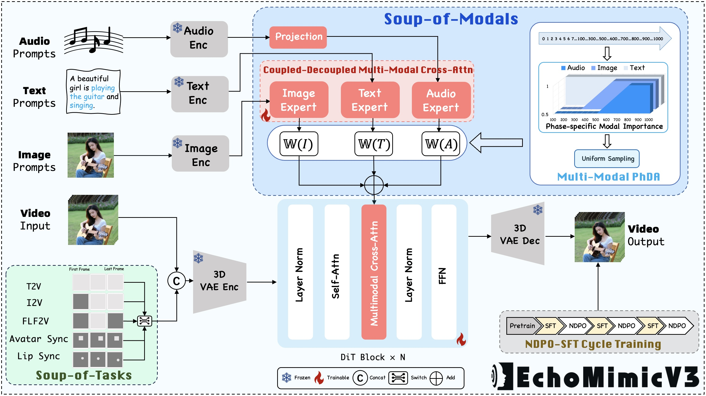

EchoMimic Series
EchoMimicV1: Lifelike Audio-Driven Portrait Animations through Editable Landmark Conditioning.
GitHub
EchoMimicV2: Towards Striking, Simplified, and Semi-Body Human Animation.
GitHub
EchoMimicV3: 1.3B Parameters are All You Need for Unified Multi-Modal and Multi-Task Human Animation.
GitHub
Abstract

EchoMimicV3 makes human animation Faster, Higher in quality, Stronger in generalization, and makes various tasks together in one model. To address this, we dive into video generation models and discover that the devillies in the details: 1) Inspired by MAE, we propose a novel unified Multi-Task paradigm for human animation, treating diverse generation tasks as spatial-temporal local reconstructions, requiring modifications only on the input side; 2) Given the interplay and division among multi-modal conditions including text, image, and audio, we introduce a multi-modal decoupled cross-attention module to fuse multi-modals in a divide-and-conquer manner; 3) We propose a new SFT+Reward alternating training paradigm, enabling the minimal model with 1.3B parameters to achieve generation quality comparable to models with 10 times the parameters count. Through these innovations, our work paves the way for efficient, high-quality, and versatile digital human generation, addressing both performance and practicality challenges in the field. Extensive experiments demonstrate that EchoMimicV3 outperforms existing models in both facial and semi-body video generation, providing precise text-based control for creating videos in a wide range of scenarios, such as podcasts, karaoke, dynamic scenes, multi-aspect ratios, and so on.
 [Paper]
[Paper]
 [Github]
[Github]
 [HuggingFace]
[HuggingFace]
 [ModelScope]
[ModelScope]